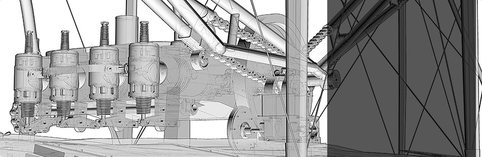

Interact with 3D models of Smithsonian treasures
learn more »
Best of Both Worlds
Museums, Libraries, and Archives in a Digital Age
A new e–book by Smithsonian Secretary Wayne Clough explores our digital journey.
Learn more »
Innovation at the Smithsonian and Around the World
Learn what’s new and what’s next.
Discover now! »
Smithsonian Science
Hello olinguito!
Smithsonian scientists discover a new mammal
Learn more »
Smithsonian Mobile
Your mobile guide to
Discover what to see and do, search our collections, access podcasts and other mobile content, find Affiliate museums in your neighborhood.
Smithsonian Associates Presents
Designing the Smithsonian’s
Tuesday, Jan. 7, 6:45-8:45 p.m.
learn more »
Smithsonian Presents
The Smithsonian in 3‑D
Our 3-D digitization team
Watch them in action now »
Interact with 3D models of Smithsonian treasures
learn more »
Help protect America’s greatest treasure:
Make your tax-deductible
Visiting the Museums & Zoo
Most museums are open daily from 10 a.m. to 5:30 p.m .
The American Art Museum and Portrait Gallery
are open 11:30 a.m. to 7 p.m. All are closed Dec. 25.
Today's Extended Evening Hours
Please enable JavaScript to view content.
IMAX ® Theaters
and Planetarium
Featured Events
Please enable JavaScript to view content.